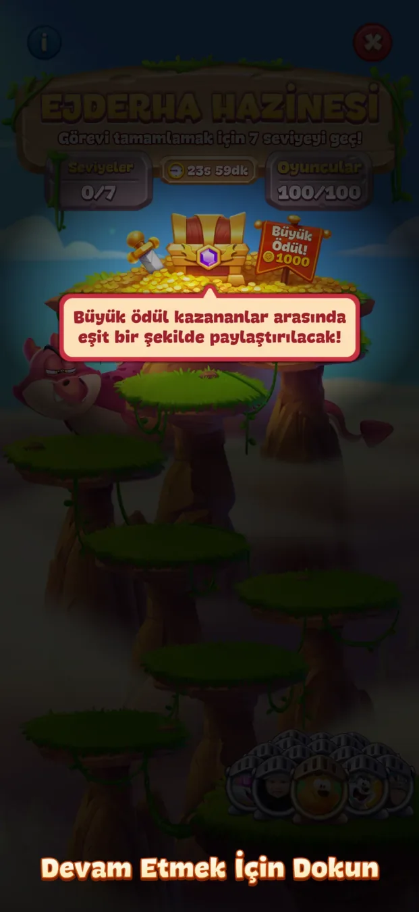
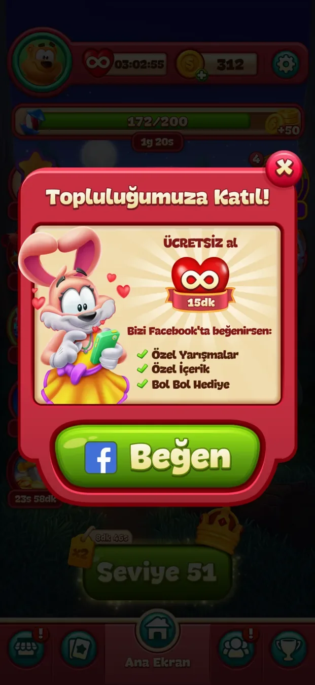
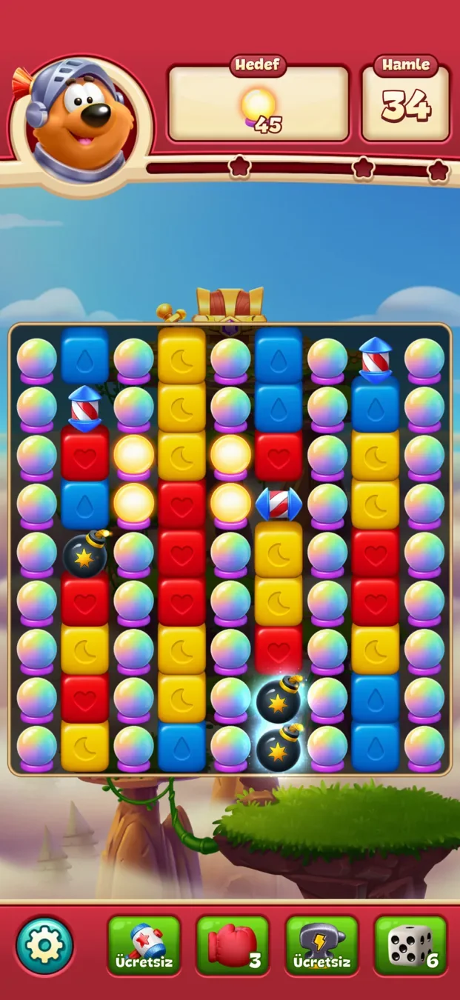

04 / Bağımsız oyun ürünü analizi · İlk 50 seviye
50 SEVİYE.
TEK SORU.
Basit bir bulmaca döngüsü nasıl çok daha büyük bir ürün ekosistemine dönüşür?
Toon Blast'in oyuncu gözünden bir analizi: onboarding, ilerleme, süreli etkinlikler ve sosyal çağrıların deneyime nasıl girdiğinin izi. Bunlar gözlemler ve ürün hipotezleridir — oyunun iç verileri ya da stratejisi hakkında iddialar değil.
01 / Temel döngü
Girmesi kolay.
Öğrenecek çok şey var.
Temel oynanış ve elde tutma sistemleri
- Temel döngü
- Oyna → Öğren → Dene → İlerle. Yeni mekanikler bağlamsal yönlendirmelerle devreye girer.
- Çevre sistemler
- İlk 50 seviye boyunca döngünün etrafında gözlemlenen süreli etkinlikler, sosyal teşvikler, güçlendiriciler ve ödüller.
Bu analizin gözlemlerinin bir özeti — oyunun iç modeli değil.

Balon mekaniği, tam ihtiyaç duyulduğu anda açıklanıyor.
Temel eşleştir-patlat etkileşimi hızla anlaşılıyor. Ek blok mekanikleri, en başta yoğun bir açıklama yerine bağlamsal yönlendirmelerle tanıtılıyor.
Kılavuzla değil, bağlam içinde öğret.
Eğitim, yeni bir hedefi anında yapılacak bir eyleme bağlıyor. Bu, oyuncunun harekete geçmeden önce aklında tutması gereken bilgi miktarını azaltabilir.
Yeni mekanik tanıtımlarını kısa tutmak ve yönlendirme kaybolduktan sonra oyuncuların kuralı anlayıp anlamadığını test etmek.
02 / LiveOps keşfi
Ana ekran
bir etkinlik merkezi.

Ana seviye butonunu çevreleyen çok sayıda etkinlik alanı.
Ana ekran aynı anda birden çok süreli aktivite sunuyor. Geri sayım etiketleri, ilerleme çubukları, ödül ikonları ve bildirim rozetleri ana seviye butonuyla birlikte dikkat için yarışıyor.
Görünürlük aciliyet yaratır — ve karmaşıklık.
Süreli içerik oyunculara geri dönmek için ek nedenler sunarken, aynı anda açık birkaç giriş noktası sırada neyin önemli olduğunu anlamayı zorlaştırabilir.
Sonraki seviye, aktif etkinlik ilerlemesi ve ikincil promosyonlar arasında daha net bir hiyerarşi denemek.
03 / Etkinlik onboarding'i
Tek etkinlik.
İkinci bir ilerleme döngüsü.
Space Miner etkinliği kendi talimatlarını, araç kaynağını, oyun alanını ve ödül yolunu getiriyor. Ana bulmaca ilerlemesinin dışında kısa vadeli bir hedef ekliyor.
Ana bulmaca ilerlemesi
- ASonraki seviye
- BBulmacayı tamamla
- CSeviye haritasında ilerle
Space Miner · etkinlik döngüsü
- 01Etkinliğe özel eylemi öğren
- 02Araç kaynağı
- 03Etkinlik alanı
- 04Ödül yolu — ve sıradaki kaynak kısıtı
Ürün hipotezi
Ayrı bir etkinlik döngüsü, oturum hedeflerini sonraki bulmacayı tamamlamanın ötesine taşıyabilir. Değeri, anlaşılırlık ve bilişsel yük karşısında değerlendirilmelidir.
04 / Sosyal ve rekabetçi elde tutma
İlerleme
ortak bir sonuca dönüşebilir.

Yedi seviye, kaybetmeden

Kazananlar arasında paylaşılan ödül
Gözlem 04Ejderha Hazinesi bir galibiyet serisi hedefini ortak bir ödülle birleştiriyor.
Ejderha Hazinesi, yedi seviyeyi kaybetmeden geçme görevi ve kazananlar arasında paylaşılan bir ödül sunuyor.
Ödül artık yalnızca kişisel değil.
Bu kurgu, temel bulmaca etkileşimini değiştirmeden rekabet ve kolektif bir sonuç ekliyor.
Katılım kurallarını ve ödül dağılımını, oyuncu katılmaya karar vermeden önce kolayca anlaşılır kılmak.
05 / Geri dönüş ve topluluk çağrıları
Seviye haritasının ötesinde.

Oyun içi avantajlar sunan harici bir topluluk daveti.
Gözlemlenen deneyim, harici bir Facebook topluluğuna yönelik çağrılar da içeriyor. Bu, oyun içi aktiviteden oyun dışı bir sosyal alana görünür bir köprü; gerçek dönüşüm ya da elde tutma etkisi ekran görüntülerinden çıkarılamaz.
Her çağrıya net bir amaç ver.
Topluluk daveti ücretsiz süreli canları, yarışmaları, içerikleri ve hediyeleri öne çıkarıyor. Oyuncular avantajları anlayabilir, ancak bu kesintinin oyun yolculuğunda nerede göründüğü de hesaba katılmalı.
Öne çıkan bir teklifin her zaman daha etkili olduğunu varsaymak yerine çağrının zamanlamasını ve kapatılma davranışını karşılaştırmak.
06 / Zorluk ve destek sistemleri
Bir seviye zorlaştığında,
oyuncunun devam etmesine ne yardım eder?

Oyun alanının altında güçlendirici seçenekleriyle devam eden bir seviye.
Güçlendiriciler ve destek araçları, temel eşleştir-patlat eyleminin ötesinde seçenekler ekliyor. Varlıkları bir ürün sorusu doğuruyor: oyun, oyunculara bir aracı ne zaman ve neden kullanacaklarını öğretiyor mu, yoksa yalnızca aracın var olduğunu mu gösteriyor?
Destek kafa karışıklığı değil, güven yaratmalı.
Mekanikler biriktikçe oyuncular hem bulmaca kurallarını hem de mevcut güçlendiricilerin rolünü öğrenmek zorunda kalıyor. Bu nedenle bir seviyenin algılanan zorluğu, bu seçeneklerin ne kadar iyi anlaşıldığına bağlı olabilir.
İlk kez gösterilen güçlendirici yönlendirmelerinin anlamayı artırıp artırmadığını test etmek ve bağlamsal destekli ve desteksiz seviye tekrarlarını karşılaştırmak. Bunlar önerilen deneylerdir, ölçülmüş sonuçlar değil.
07 / İlerleme ve geri bildirim
İlerlemenin
anlaşılır bir anlamı olmalı.
Temsilîdir — gözlenen değerleri değil, soruyu gösterir.
Seviye yolu tamamlanan aşamaları, görünen yıldızları ve birkaç paralel ilerleme sistemini bir araya getiriyor. İlerleme göstergeleri oynamaya devam etmeyi motive edebilir, ancak değerleri oyuncuların her birinin neyi temsil ettiğini anlamasına bağlı.
Eylem ile ödül arasındaki ilişkiyi okunur kıl.
Yıldızların ya da bir etkinlik göstergesinin rolü hemen anlaşılmadığında, arayüz bir hedef yerine bir soru yaratabilir.
Yıldızların nasıl tanıtıldığını, ödüllerin kazanıldığı anda açıklanıp açıklanmadığını ve etkinlik ilerlemesinin her seviyeden sonra nasıl iletildiğini gözden geçirmek.
08 / Monetizasyon ve geri dönen oyuncular
Geri dönmek için daha çok neden.
Verilecek daha çok karar.
Süreli canlar, ödüller, güçlendiriciler ve çoklu etkinlikler, deneyimin oturum süresini ve geri dönüş davranışını şekillendirebileceği farklı yollara işaret ediyor. Bunlar aynı zamanda monetizasyonla ilgili kararlara yakın duruyor; burada kazanılmış ilerleme, ücretsiz destek ve ücretli değer arasındaki ayrım önemli.
İç iddialar değil, ürün soruları
Temel yolculuğun netliğini koru.
- Monetizasyon
Bir güçlendiricinin ya da satın almanın değeri, oyuncu ona ihtiyaç duymadan önce anlaşılır mı? Ücretsiz ve ücretli yollar kolayca ayırt edilebiliyor mu?
- Geri dönen oyuncular
Bir süre uzak kalan biri, her etkinlik rozetini ve sayacını incelemeden sonraki faydalı eylemi bulabiliyor mu?
- Fırsat
Geri dönüş oturumundaki anlaşılırlığı, teklif zamanlamasını ve algılanan adaleti kullanılabilirlik testleriyle ve varsa davranışsal verilerle değerlendirmek.
Ürün açısından çıkarım
Bulmaca giriş noktasıdır. Yolculuğu çevresindeki sistemler şekillendirir.
İlk 50 seviye boyunca en ilginç değişim temel bulmaca etkileşimi değildi; yeni mekaniklerin, güçlendiricilerin, ödüllerin, sayaçların, etkinliklerin ve sosyal teşviklerin kademeli olarak eklenmesiydi. Temel ürün sorum: oyuncuları içeri çeken basit döngüyü gölgelemeden bu sistemleri nasıl keşfedilebilir tutarsınız?
Kişisel oynanışa dayalı bağımsız bir gözlem analizidir. İç analitiğe, deneylere ya da ürün kararlarına erişim yoktur. Ekran görüntüleri yorum ve eleştiri amacıyla kullanılmıştır; Toon Blast ve görselleri ilgili hak sahiplerine aittir.